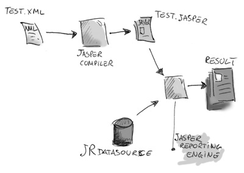
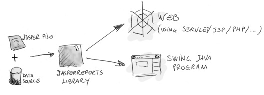
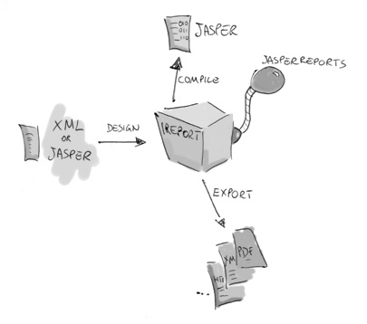
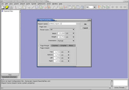
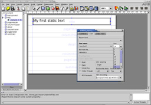
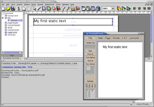

|
 |
<< Previous | Next >> | Table of Contents
3 iReport and JasperReports basic concepts
iReport is not useful without a library called JasperReports. This powerful library is one of the most advanced reporting engine avalaible to the OpenSource community.
Before starting to play with iReport, it's important understand what iReport do and why. In this chapter I'll explain some
basic concepts on how JasperReports works, what iReport do using "jasper" itself and why it semplify the live of the user.
3.1 How JasperReports works
JasperReport works in a way similar to a compiler and an interpreter. See fig. 3.1. The user design a report coding it in XML in agreement to tags and attributes defined
in a file called jasperreports.dtd (part of JasperReports). Using XML a user define the entire report, describing where place texts, images, lines, rectangles, how to retrive data,
how to make certain calculations to show subtotals, etc...
|  | | Fig.3.1: How JasperReports works. |
This XML source file must be compiled in order to produce a real report. The compiled version of the source is named "jasper file" (it ends with .jasper). A jasper file is a
compiled report source.
When we have a jasper file, we need another thing in order to produce a report: we need data. This is not always true. In some cases We could want to generate a report that don't shows dynamic
data, but i.e. only static text, but this can be reduced to a report that has only an empty record. To supply this records to the jasper engine we need to present it using a special jasperreports specific
interface named JRDataSource. A datasource + a jasper file = a print. A print can then be exported in many formats like PDF, HTML, XML, XLS, CVS, etc... The export will be done
using special classes the implement specific exporters.
3.2 Compilation end export of reports
For a newbie, design and create the jasper file is the hardest work. When you have designed and compiled your jasper file, you can use the JasperReport library to dinamycally
fill your report in several enviroments like a web application (using i.e. java servlet, but I have succesfully used JasperReports for generating PDF reports calling it from a PHP script...).
Jasper make available a special viewer to display a report preview, designed for swing based traditional java applications.
|  | | Fig.3.2: JasperReports can easily integrated in a Web application as in a java swing based program. |
3.3 Our first very simple report
iReport provide to jasperreports users a visual interface to build reports, generate jasper files and test prints. iReport born as development tool, but it can be used
as an office tool to retrive and print data stored in a database, without pass through another application.
|  | | Fig.3.3: How JasperReports works. |
iReport can read and modify both jasper XML and jasper files. Trought jasperreports, it's able to compile XML to jasper files and "run reports" to fill it using several types of JRDataSource and export the result to PDF,HTML,XLS,CSV,...
To better understand as all works, we'll do a test. Follow this simple steps:
1. Open iReport and create a new empty document.
|  | | Fig.3.4: New report properties. |
2. Add to the title band a static text element
|  | | Fig.3.5: Changing font size.... |
3. Run the report (iReport will ask for save the file before compile it) 
|  | | Fig.3.6: The final report viewed with GhostView. |
In this session we have created a simple report, saved as XML file, compiled as jasper file, filled with an "EmptyDataSource" end exported in PDF.
<< Previous | Next >> | Table of Contents
|
|
|
{kind=link}
{kind=link}
{kind=link}